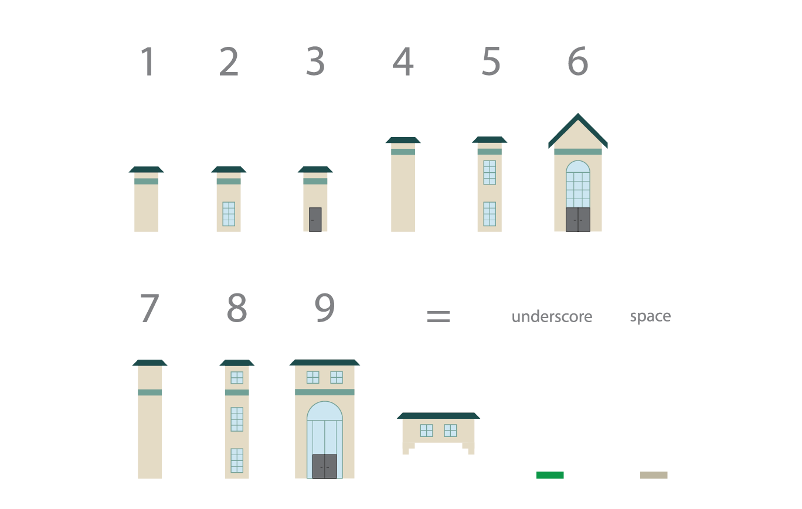

bohzarts: a cmu typeface
What happens when the keyboard is tranformed into a construction tool? How do the rules of architecture translate to the rules of typography? This is an experimental typeface that invites the user to make their own world comprised entirely of Beaux Arts style buildings.
TIME: in progress
ROLE: type design, experimental type
TOOLS: glyphs

project brief
This font was made in a variable type design class taught by the lovely Kelsey Elder. The original prompt encouraged us to find patterns or symbols in the world around us and translate that into a kit of parts to build our first font. This was both a way to help us familiarize ourselves with Glyphs (and specifically its component feature) and a blank slate for us to use the keyboard really any way we want to.
At the time, I was combing through CMU's archives of course catalogs for my own enjoyment. In the earliest days of the school, the catalog would include a campus map with current buildings and future plans. Reading them chronologically gave me the joy of seeing all the original buildings, ones I can still walk around today, reach completion. These first few buildings - Baker-Porter, Doherty, Margaret Morrison - were all built in the Beaux Arts style. This inspired me! They all have visual motifs, stylistic choices that *make* them Beaux Arts and not another similar style. How could this be translated to a font?
As it stands, bohzarts is a COLR font with 12 glyphs. Each glyph changes depending on what's around it, creating cohesive buildings as you type. Rather than being able to spell words or form sentences, you create your very own CMU campus.
future plans
For the forseeable future, I will add as many glyphs as possible so that the typing experience feels complete. I will create an interactive site for anybody to try it out themselves as well. (reach goal: making different families be different architecture styles)
Stay tuned for progress!